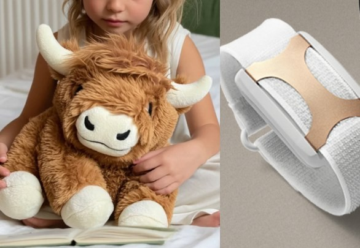

CalmCompanion™
CalmCompanion™Our story
It started at a ballet.
In Suz's own words.
A ballet performance. A haptic wristband on my ankle. A weighted Highland cow in my lap. And a thought that changed everything: what if these were the same thing?
I have always needed a little more than the world typically offers. More weight, more movement, more sensation, more time. I have spent years finding tools that help: the weighted plush that grounds me, the haptic device that slows my heart rate, the breathwork that brings me back.
That night I caught myself tensing my legs, trying to stay still and calm in a room that asked me to be quiet and motionless. And somewhere in the dark, between the music and the movement on stage, it occurred to me: what if the thing you hold for comfort could also respond to you?
I went home and started building. The first prototype was modest: a pressure sensor, a small motor and an Arduino tucked inside a stuffed animal. But the moment I squeezed it and felt it squeeze back, something clicked. It answered me.
I wrote to the makers of the plush to share the idea as a product suggestion. Then I realized this was not a suggestion. It was mine to build.
That is how Norman came to be. Not from a product brief or a market gap analysis. From a dark theater, a Highland cow, and a nervous system that needed something that did not exist yet.

The founder
About Suz.
Suz Tocco is a Principal Designer at Microsoft, a maker, and someone who is wired differently. She built Norman because she needed him, and because nothing like him existed.
He was built at home, tested in her lap, and designed from lived experience rather than a product brief. She believes the most powerful tools are the ones that meet you exactly where you are.
“Some of us need more. More weight. More warmth. More time. Norman was built for more.”
What we believe
We believe different is the whole point.
Norman is for everyone whose nervous system needs more than the world typically offers. For children who need something that holds them back. For adults in waiting rooms, meetings and performances, quietly managing what nobody else can see. For anyone who has ever been told their needs are too much.
“I'm allowed to be different. I'm allowed to be me.”